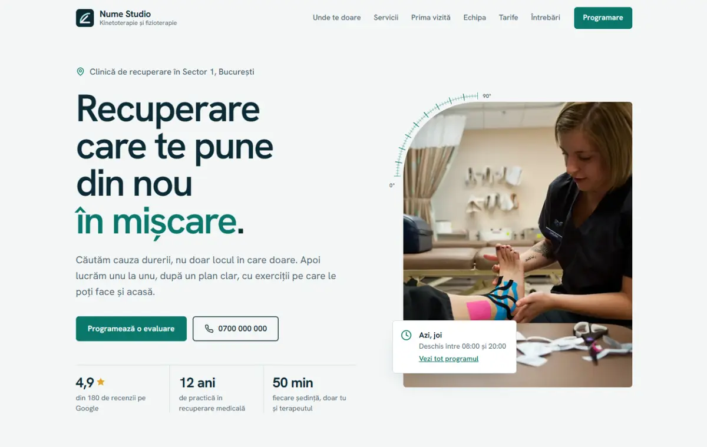
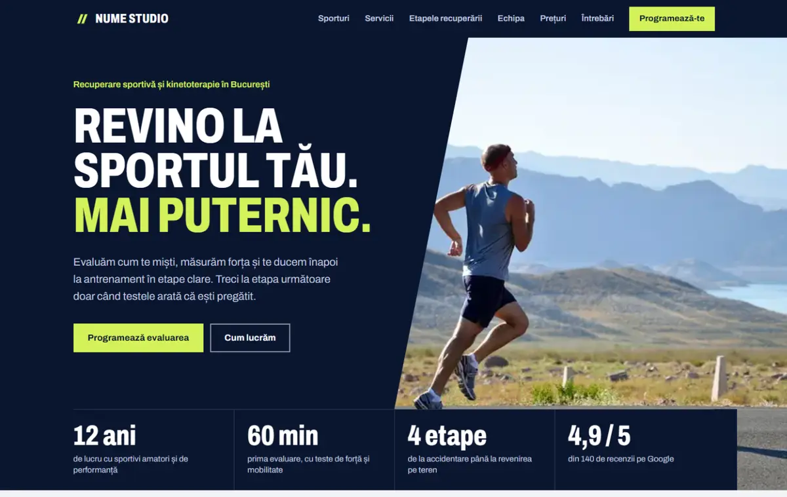
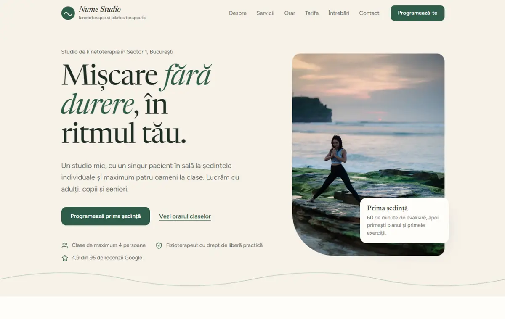

-

Axa / clinică
Luminoasă și precisă, pentru o clinică cu mai mulți terapeuți și aparatură de fizioterapie. Colțul fotografiei din hero are o riglă de goniometru.
- În plus
- Hartă interactivă "Unde te doare?" cu 8 zone, afecțiuni și terapii; programul zilei în hero
- Fonturi
- Hanken Grotesk
- Culori
-

Elan / sport
Energică, cu titluri condensate și tăieturi în diagonală, pentru recuperare sportivă și oameni activi.
- În plus
- Etapele recuperării în taburi, cu criterii de trecere; sporturi și accidentări tipice; pachete
- Fonturi
- Archivo, în lățime normală și condensată
- Culori
-

Respiro / studio
Caldă și liniștită, pentru un studio mic cu un terapeut, clase de pilates terapeutic, copii și seniori. Textul e la persoana întâi.
- În plus
- Orarul claselor pe zile, voucher cadou, trei exerciții pentru acasă, scrisoare de bun venit
- Fonturi
- Newsreader și Figtree
- Culori